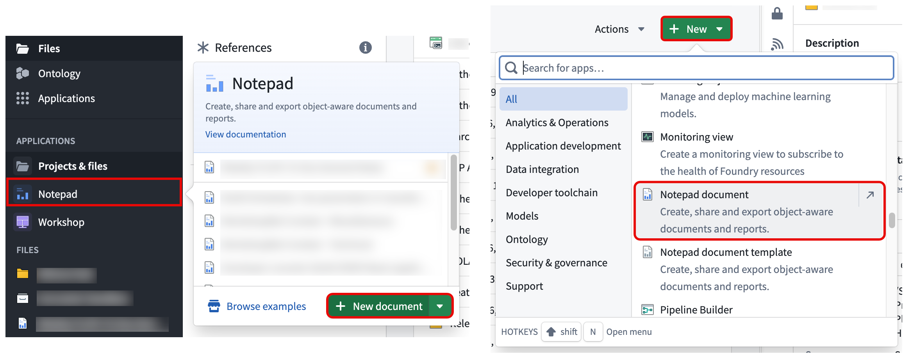
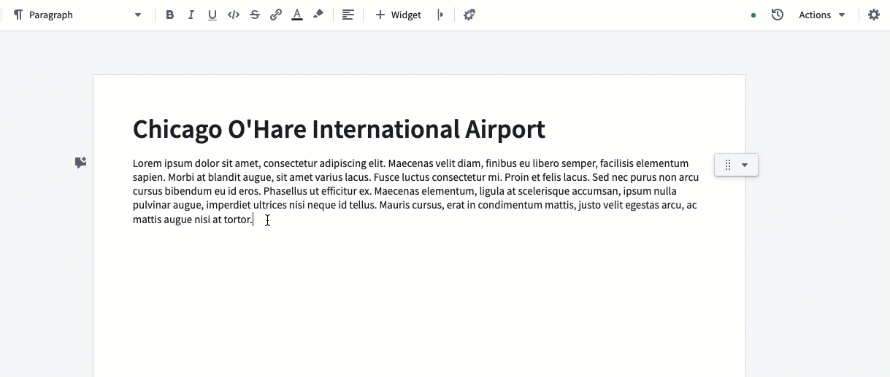
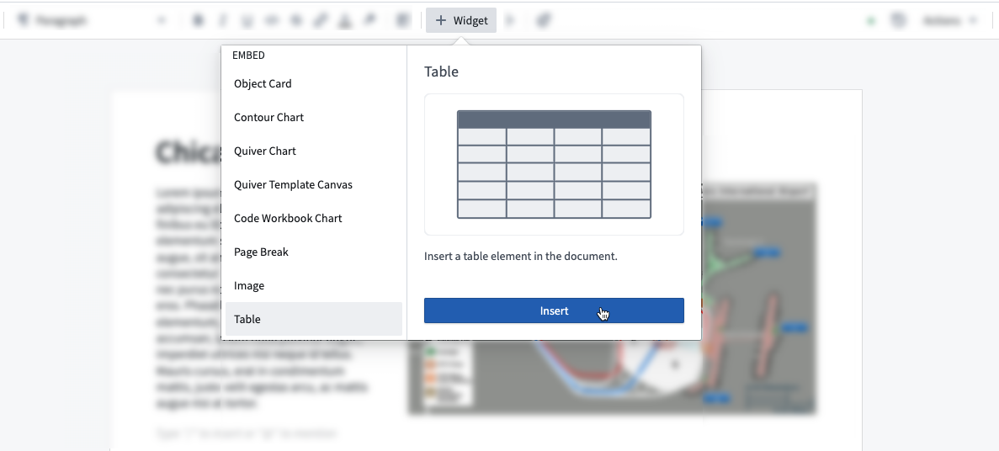
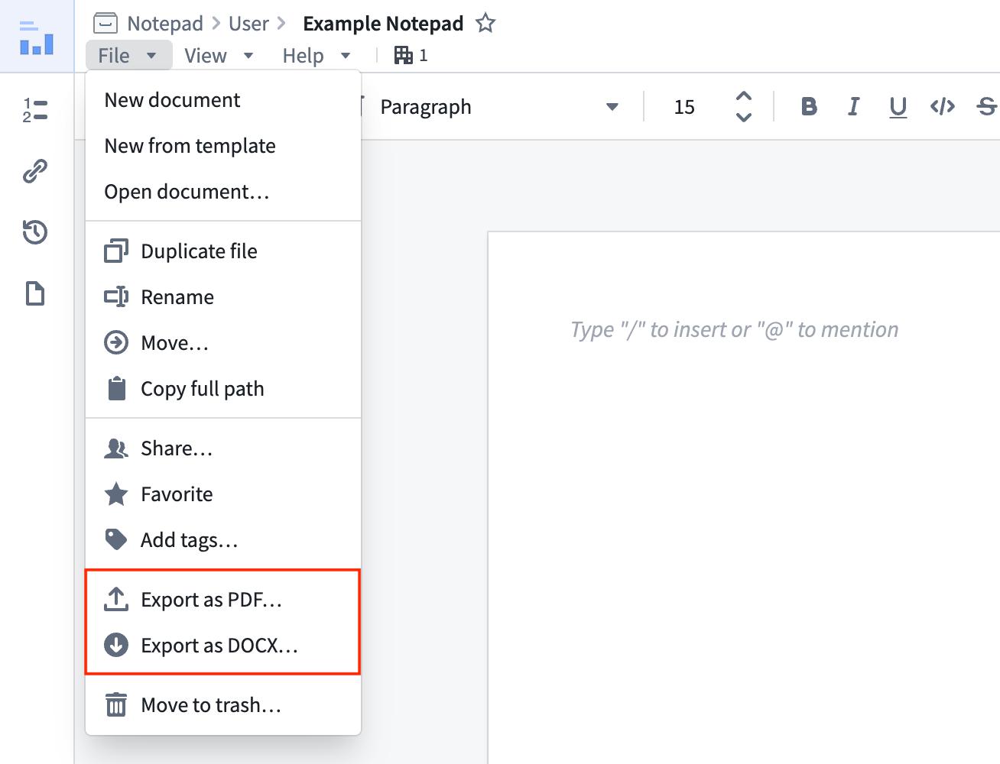
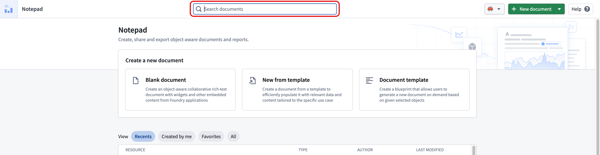
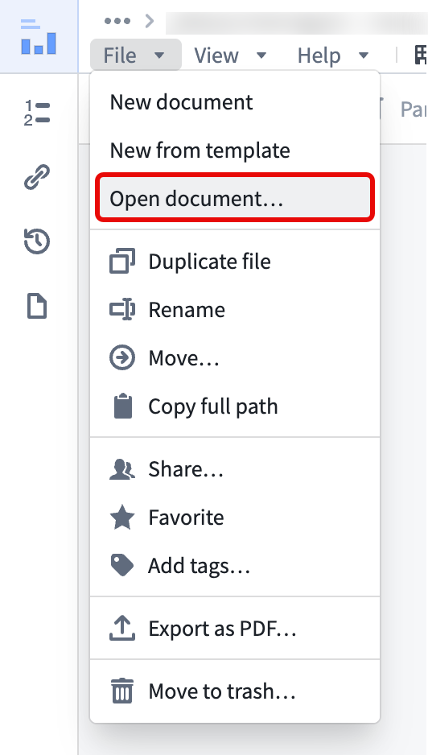

This tutorial will walk you through creating a new Notepad document, adding text, an image, and a table, and then exporting the document as a PDF or DOCX.
There are multiple ways to create a new Notepad document:

Once you create your document, start by adding a headline: type your headline caption and select Large Heading in the top toolbar to format the text accordingly.
Next, add some text to your document and add a second column to put an image right next to it. To do this, first select Add column in the toolbar and either drag and drop an existing image or simply paste an image from the clipboard into the new column.

Finally, insert a table at the bottom of your document. To do this, open the widget insertion menu by typing the / shortcut in a paragraph or by selecting + Widget in the toolbar and searching for Table.

To export the document to share with others, select the File menu in the top left and choose either Export as PDF or Export as DOCX to trigger the document rendering process. When the Notepad finishes rendering, Foundry automatically downloads and saves the document in the corresponding file format.

Use the Search documents bar on the Notepad homepage to search for any document you are able to access.

To navigate to the Notepad homepage from a document you are currently viewing, select File > Open document.
